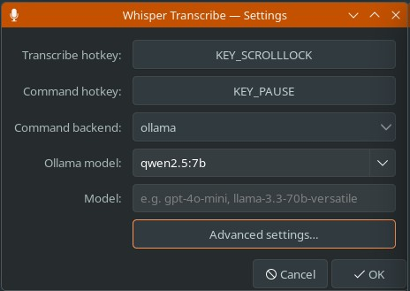
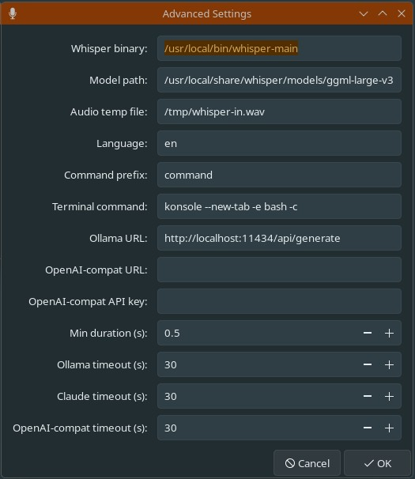

WhisperTranscribe
Linux push-to-talk transcription and voice command daemon — one button types, the other routes speech into configurable LLMs

Tray Settings
Advanced SettingsOverview
WhisperTranscribe turns a custom two-button HID controller into a practical voice interface for the Linux desktop: one button types into whatever window is focused, while the other turns spoken instructions into GUI launches, terminal commands, or injected key sequences.
It is a Python daemon driven by the two-button MicrophoneController USB HID device. Both buttons share the same hold-to-record flow: audio is captured while the key is held, transcribed by whisper.cpp on release, and then routed based on the trigger.
Scroll Lock injects the transcription directly into the focused window via ydotool with no clipboard interaction. Pause routes the text through a configurable LLM backend, which interprets the spoken instruction and returns an executable action: launching an app, running a shell command in a terminal, or injecting a key sequence.
The daemon watches evdev keyboard devices with hotplug support, deduplicates duplicate event nodes from the same physical keyboard, and can now filter by a configured input device name. A 0.5-second tap guard discards accidental presses. A systemd user service handles autostart and restart on failure.
A GTK3 system tray application provides a persistent icon that reflects the daemon's running state and a settings dialog for configuring hotkeys, LLM backend, model, binary paths, language, timeouts, terminal emulator, target input device, and whether whisper.cpp should use GPU offload — all without editing config files.
Current Status
-
Active branch:
other-models, focused on making command mode work across more LLM providers and machine configurations. - Command backends now include Ollama, Claude CLI, OpenAI, Groq, LM Studio, and OpenRouter through a shared OpenAI-compatible chat-completions path.
-
Advanced settings now include an input-device name filter and
a
whisper_gputoggle, allowing the daemon to target a specific keyboard and run whisper.cpp with or without GPU acceleration. - The tray adapts its model field by backend: Ollama gets a live local model picker, while OpenAI-compatible providers get a model text entry.
-
The README documents Python 3.9+ support, systemd user
services, install/uninstall flow, and cloud/local model
configuration through
config.json.
Stack
Challenges
- Normalizing local and cloud LLM providers into one command interface while keeping response parsing strict enough to be safe and predictable.
- Keeping evdev device handling reliable across hotplug events, duplicate physical interfaces, permission errors, and user-selected device filters.
- Supporting both GPU and CPU whisper.cpp execution paths without turning install/configuration into a hardware-specific maze.
- Building a GTK3 tray that works with Linux tray standards and exposes enough configuration to avoid hand-editing JSON for normal use.
Learnings
- OpenAI-compatible APIs reduce backend code, but defaults still matter: each provider needs sensible URL/model behavior and clear API-key handling.
- Desktop automation is most useful when it never touches the clipboard; ydotool text and raw key injection keep the focused application as the integration point.
- Hotplug-aware keyboard watching needs physical-device deduplication, not just event-node enumeration.
- GTK3 tray via StatusNotifierItem + DBusMenu works, but sparse docs and fragmented Linux tray standards make it harder than the actual daemon logic.
LLM Command Mode
The LLM receives the transcription and must respond with exactly one of three formats, which the daemon parses and executes:
-
GUI: <cmd>— launches an application or URL silently in the background -
TERMINAL: <cmd>— runs a shell command in a new terminal window using the configured terminal emulator -
KEYS: <sequence>— injects raw ydotool keycode events, enabling shortcuts like select-all, undo, or arbitrary key combinations by voice
Backends are selected through config or the tray UI. Ollama remains the default local path; Claude CLI is supported for command-line use; OpenAI, Groq, OpenRouter, and LM Studio share the OpenAI-compatible request path with configurable URL, model, API key, and timeout.
System Tray
A GTK3 system tray application implements the KDE StatusNotifierItem + DBusMenu protocols, giving a persistent tray icon that reflects the daemon's running state. The tray polls the systemd user service every two seconds and updates the icon between a microphone and a muted microphone accordingly.
The tray menu provides start/stop toggle and a settings dialog covering: keyboard device selection (dropdown of all evdev-capable devices), hotkey capture (click the button then press any key), LLM backend selection, live Ollama model picker (queries the local instance for installed models), an OpenAI-compatible model field, and an advanced panel for binary paths, API settings, input device name filtering, GPU toggle, language, timeouts, and terminal emulator. Works natively on KDE; GNOME requires the AppIndicator shell extension.
Components
-
key_watcher— evdev device discovery and exclusive keyboard grab; maps multiple keycodes to independent callback pairs -
recorder— spawns pw-record as a subprocess to stream audio to a temp WAV while the key is held -
transcriber— invokes whisper.cpp with--no-timestamps -np, appending--no-gpuwhen GPU offload is disabled; strips and returns clean text, or None on failure -
commander— builds a structured prompt, queries Ollama, Claude CLI, or an OpenAI-compatible backend, parses the response, and dispatches GUI/TERMINAL/KEYS actions -
typer— calls ydotool to inject transcribed text or raw key sequences into the active window -
tray— GTK3 StatusNotifierItem tray with DBusMenu settings dialog -
daemon— orchestrates all modules; handles SIGTERM/SIGINT cleanly and manages the minimum-duration guard
Branch Work
The older ubuntu-debian-support work broadened
platform compatibility. The current other-models
branch is focused on LLM provider flexibility and machine-level
configuration.
- Multi-provider command mode — OpenAI, Groq, OpenRouter, and LM Studio now share an OpenAI-compatible backend alongside Ollama and Claude CLI.
- Device targeting — the daemon can filter watched evdev devices by configured device-name substring, which helps when multiple keyboards or HID devices are present.
-
GPU toggle — the tray and config can disable
whisper.cpp GPU offload, causing transcription to pass
--no-gpufor CPU-only or troubleshooting cases. -
OpenAI-compatible model controls — the tray
shows provider-specific model controls and stores the chosen
model, URL, API key, and timeout in
~/.config/whisper-transcribe/config.json.
Hardware
- MicrophoneController USB HID device — Scroll Lock triggers transcription mode; Pause triggers LLM command mode
- AMD Radeon RX 7900 XTX — Vulkan backend drives GPU-accelerated whisper.cpp inference (GGML_VULKAN=ON), keeping transcription latency low for both modes